All the school project entries, one under the other: the 2017/18 campaign, the 2016/17 entries, the 2015 entries, Press, and Lycée International.
The 2017/18 campaign — Centenary preparations · 2016/17 entries — Student artwork, Lego film and ‘Pigeon Post’ · 2015 entries — The Lycée Pasteur Remembrance Tree · Press · Lycée International, St Germain en Laye
The school year 2017/18 will see preparations for the one hundredth anniversary commemorations marking the end of the First World War. These events in 2018 will be particularly significant for those of us in France, and will see the Paris Branch of the Royal British Legion leading the way.
The basis of the Remembrance project for schools remains as before, but has the following important additions to be included in the 2018 commemorations:
We look forward to hearing from you, and seeing the high quality and imaginative contributions from students that have become associated with this project. The RBL is happy to support your work with visits, loan of resources, and more — please let us know.
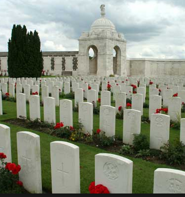
Troops from many nations participated. Here: Indian troops on their way to the front.
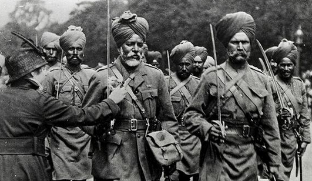
Inspired by the 1914–18 anniversary, the Paris Branch of the Royal British Legion is pleased to invite you to participate in the project, “Remembrance”, for the school year 2017–18. The best of this year’s work will be used as part of celebrations for the hundredth anniversary of the Armistice in November 2018.
As preparations are made to remember the anniversary marking the end of the First World War, “Remembrance” is an invitation to pupils to express their interpretation of the theme. This may be inspired by study of any war which has involved British or Commonwealth soldiers. “Remembrance” is an invitation to pupils to express their ideas in a form of their choice, using one or several media. The project emphasises participation. Members of the RBL are pleased to make visits to schools to view work and talk to students. Entries are viewed with RBL members and partner associations, either in exhibitions or virtually. Some items may be exhibited at the British Embassy in Paris.
If you are interested in participating, please contact remembrance@rblfrance.org ›.
“Remembrance” is an annual invitation to pupils to express their understanding of the theme in whatever way they wish, using one or several media. Many entries from pupils, ranging in age from four to seventeen, have been received for this year’s competition. Here is a selection from 2017: Original Art by a student, Institut Notre Dame in Saint-Germain-en-Laye; ‘Pigeon Post’, Institut Notre Dame, Saint-Germain-en-Laye; Closing shot from an animated film using Lego, British School of Paris Juniors.
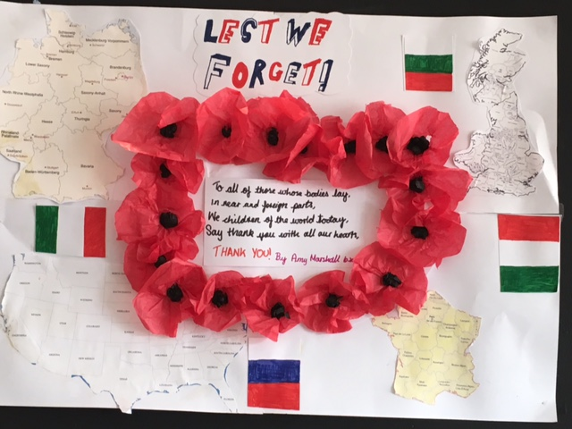

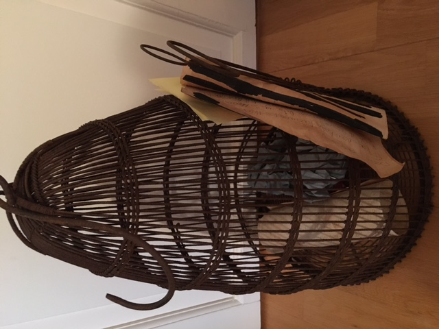
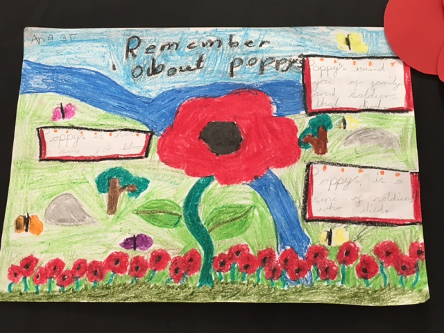
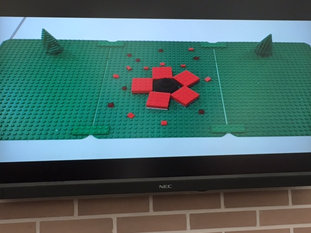

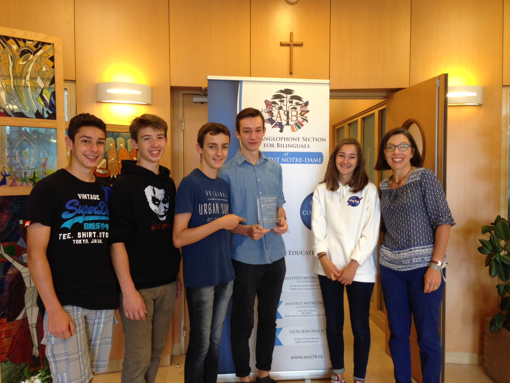
School entries for the Remembrance Project, including the Remembrance Tree by Lycée Pasteur, Neuilly.
The Royal British Legion, Paris Branch Remembrance Project
Communications to: remembrance@rblfrance.org
The Remembrance Tree,
Designed and created by students from Lycée Pasteur, Neuilly sur Seine.
The Lycée won a special prize for a whole class entry.
‘Remembrance’ was an invitation to pupils to express their understanding of the theme in whatever way they wished, using one or several media.
Almost one hundred and sixty entries from pupils, ranging in age from ten to seventeen, were received for this year’s competition.
Contributions ranged from poetry to a piano composition, artwork to film, and a virtual book to an imaginative ‘Remembrance tree’.
Senior students from the participating Lycées, both native and non-native English speakers, particularly impressed the judges by their eloquence and passion when speaking about their remembrance work.


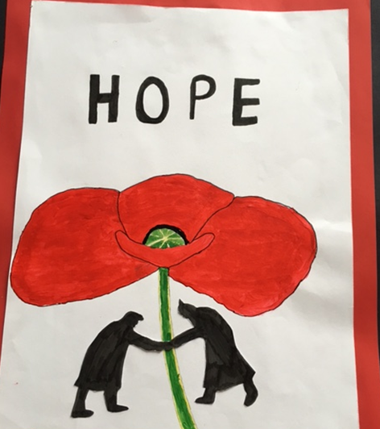
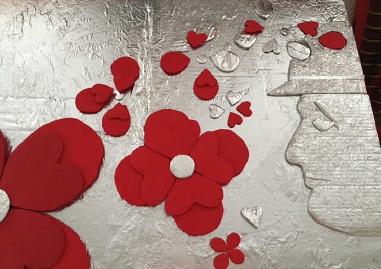
The Remembrance Tree, designed and created by students from Lycée Pasteur, Neuilly-sur-Seine. The Lycée won a special prize for a whole class entry.
“Remembrance” was an invitation to pupils to express their understanding of the theme in whatever way they wished, using one or several media. Almost one hundred and sixty entries from pupils, ranging in age from ten to seventeen, were received for this year’s competition. Contributions ranged from poetry to a piano composition, artwork to film, and a virtual book to an imaginative “Remembrance tree”. Senior students from the participating Lycées, both native and non-native English speakers, particularly impressed the judges by their eloquence and passion when speaking about their remembrance work.


Remembrance Project press.
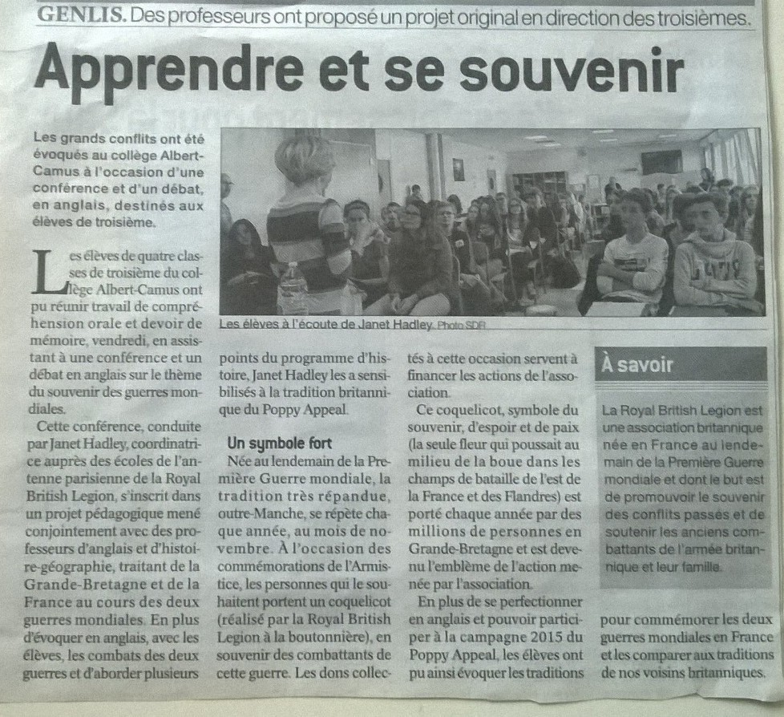
The British Section Magazine “Insites” — Lycée International, Saint-Germain-en-Laye.
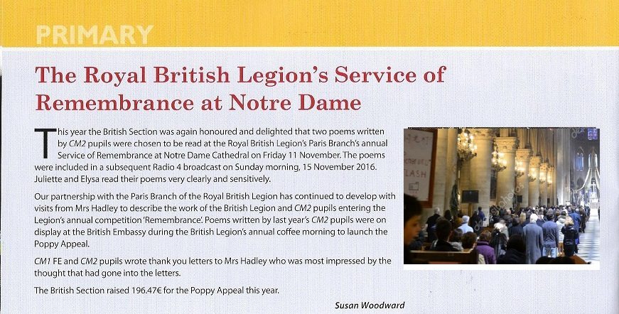

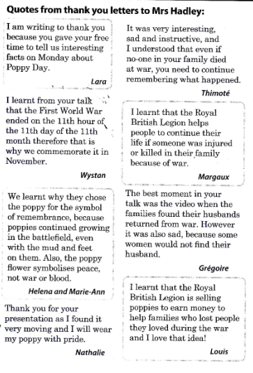


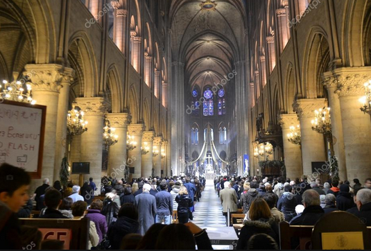